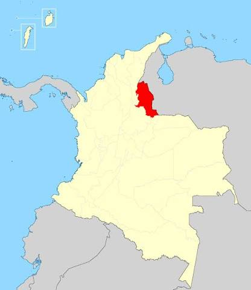
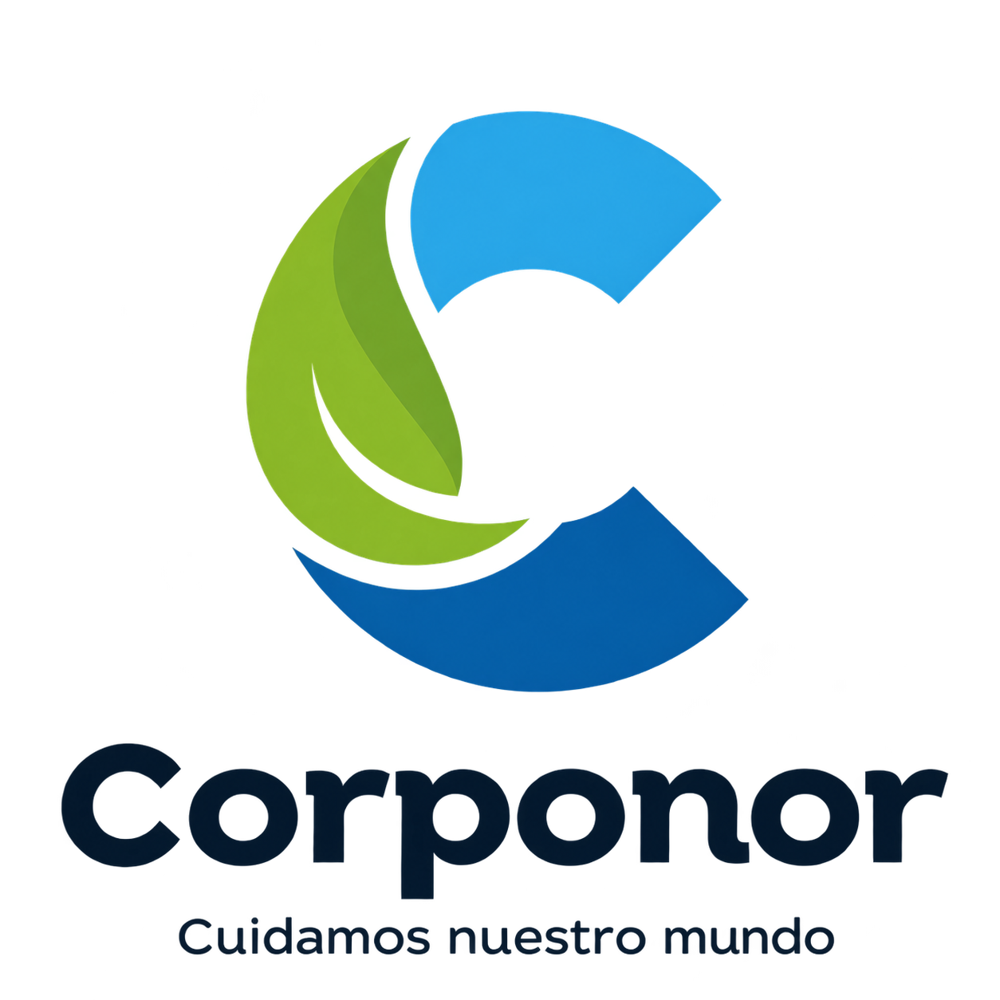

Producir un pollo de excelente calidad, que cumpla con todas las normas sanitarias, garantizando la satisfacción de las necesidades, gustos y preferencias de nuestros clientes, incorporando procesos de calidad, promoviendo el bienestar de nuestros empleados, con una producción limpia y amigable con el medio ambiente

Ser la empresa líder a nivel nacional en el sector avícola, con una producción vertical, que integre la incubación, levante, engorde, beneficio y comercialización de nuestras aves. Contando con la planta de beneficio mas tecnificada en Norte de Santander, avalada por el INVIMA
Al utilizar solo insumos naturales y que no dejen residuos perjudiciales para la salud humana y el medio ambiente


Brindando un producto sano que cumple con todas las normas sanitarias vigentes nacionales e internacionales
Haciendo una producción limpia, contribuyendo a la conservación del medio ambiente que es patrimonio de nuestros hijos


En conjunto con todo el personal y todos nuestros proveedores para desarrollar y aplicar el concepto de producción limpia en todas sus fases
¡Orgullosamente Norte Santandereanos!
Estamos ubicados en la dirección Km 1 Vía Puerto Santander No. 98, Vereda Los Peracos, Cúcuta, Norte de Santander




Contamos con la primera una Planta de Tratamiento de Aguas Residuales (PTAR) en el departamento de Norte de Santander avalada por Corponor, máxima entidad medioambiental de la región. esto, desde luego, implica la separación en seco de desperdicios del pollo criollo, equipado tamices tanque homogeneizador y tanque sedimentador. Somos empresa medioambientalmente sostenible con un piloto de granjas de reproducción e incubación que nos permite controlar toda la cadena productiva ofreciendo un pollo criollo de raza seleccionada. Criamos nuestros pollos criollos con concentrado FINCA y estamos comprometidos con las personas que hacen parte de la familia Mascriollo , que hacen posible día a día entregar un producto fresco, apetecido en la dieta diaria y con altos valores nutricionales. Contamos además con certificación ICA. Trabajamos cada día para ofrecerte lo mejor.